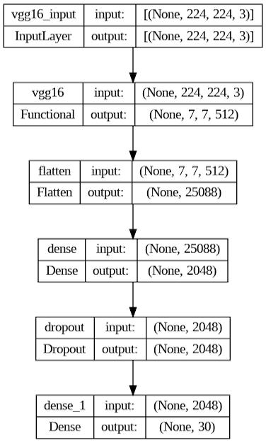
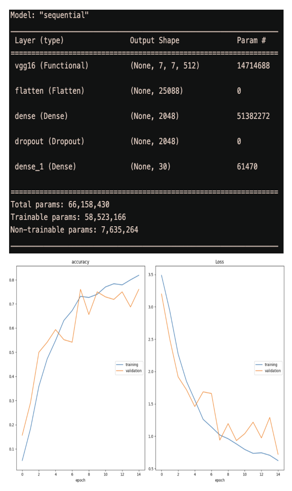
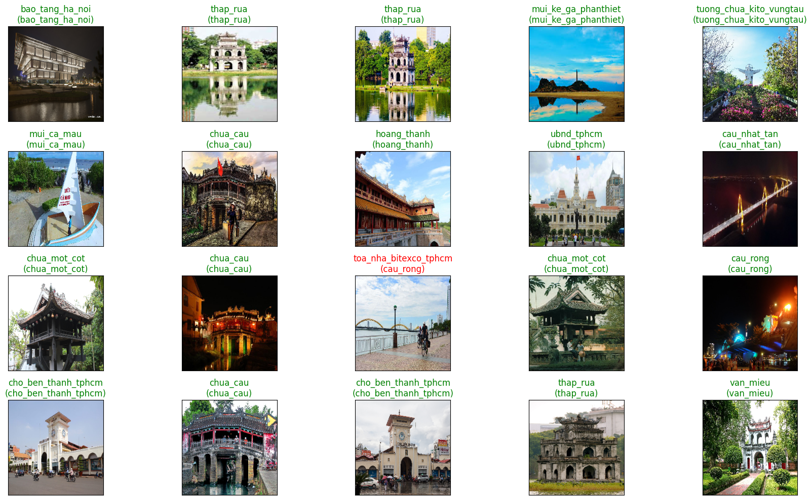

The Landmark Classification project focuses on accurately predicting 30 famous landmarks in Vietnam using deep learning techniques.
Project Summary:
The dataset undergoes data augmentation, including normalization, brightness adjustment, width shift, rotation, horizontal and vertical flips, and 10% validation split for model evaluation.
The model architecture employs a transfer learning approach with the VGG16 base model pre-trained on the ImageNet dataset.
The top layers of VGG16 are removed, and new layers are added for fine-tuning.
The final layers consist of a flatten layer, a dense layer with 2048 units and ReLU activation, a dropout layer, and an output dense layer with softmax activation to produce class probabilities.
During training, the model utilizes the Adam optimizer with a learning rate of 0.0001 and categorical cross-entropy as the loss function.
The training process is monitored for early stopping based on validation loss to prevent overtraining. The model achieves an impressive overall categorical accuracy of 86.63% after 15 epochs.
The Landmark Classification project showcases the effective use of transfer learning and data augmentation techniques to accurately identify and classify Vietnam's famous landmarks.
The high accuracy achieved demonstrates its potential for practical applications in the fields of tourism, cultural preservation, and geographical analysis.

Model

Training history
The following figure provides an insightful way to evaluate the performance of the landmark classification model and visually inspect the correctness of the predictions on sample images.
For each image, the figure displays the image and annotates it with the predicted class and true class. The plot is color-coded, showing green for correct predictions and red for incorrect ones.
